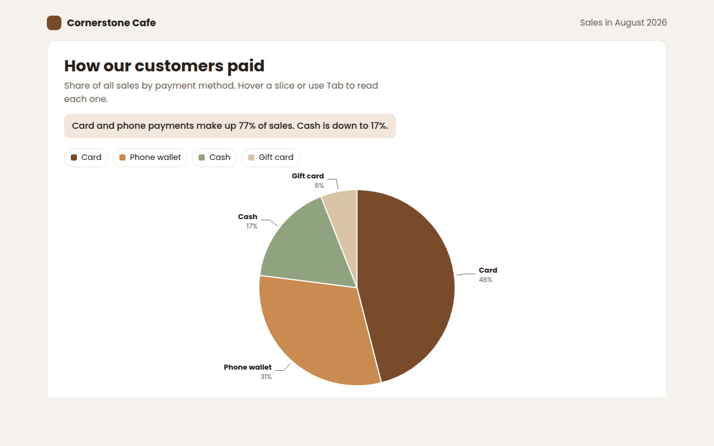
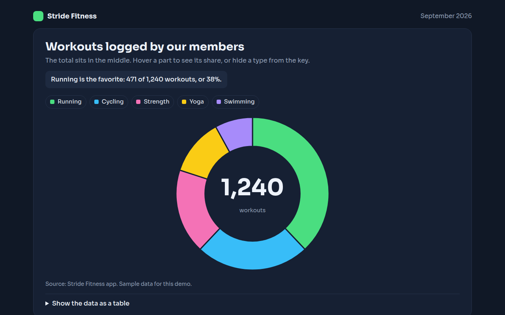
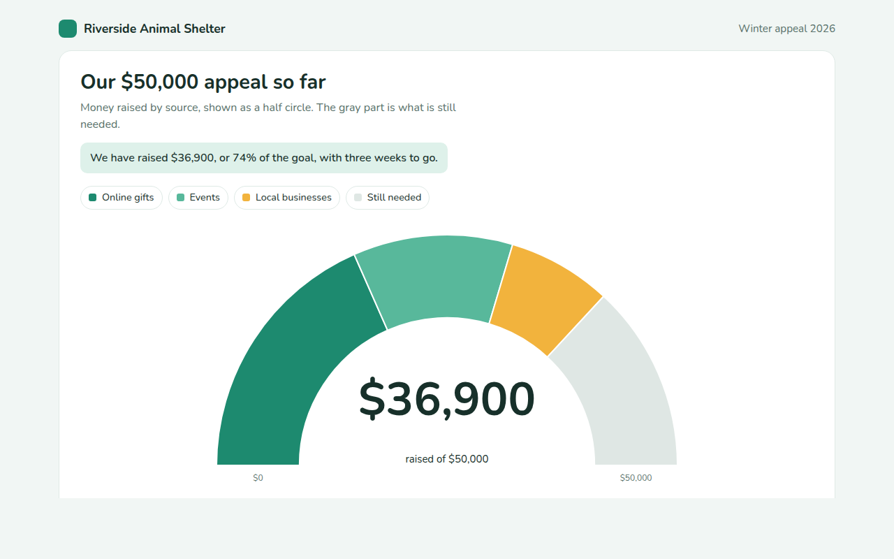
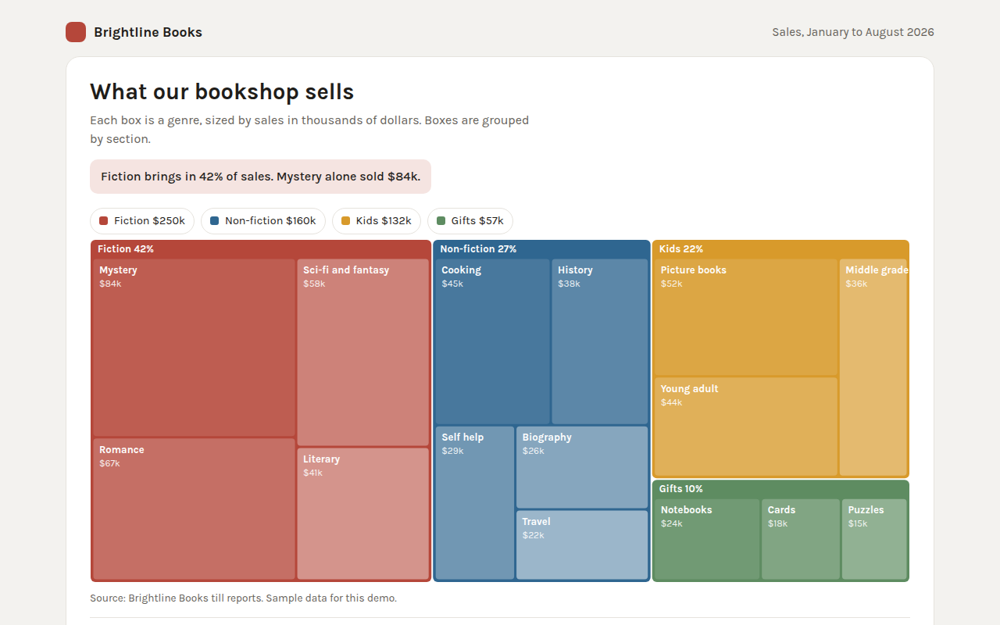
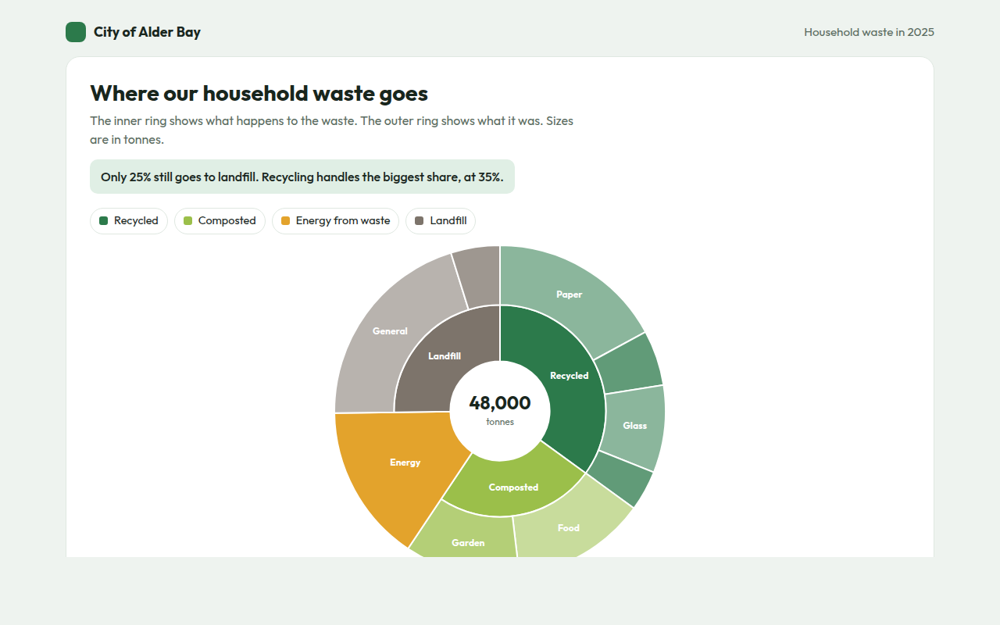
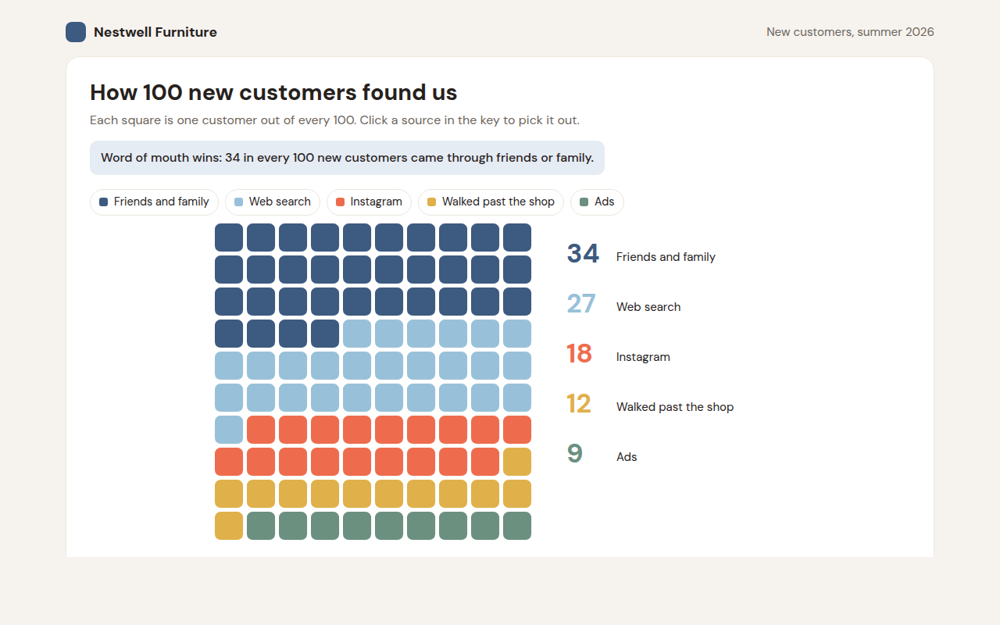
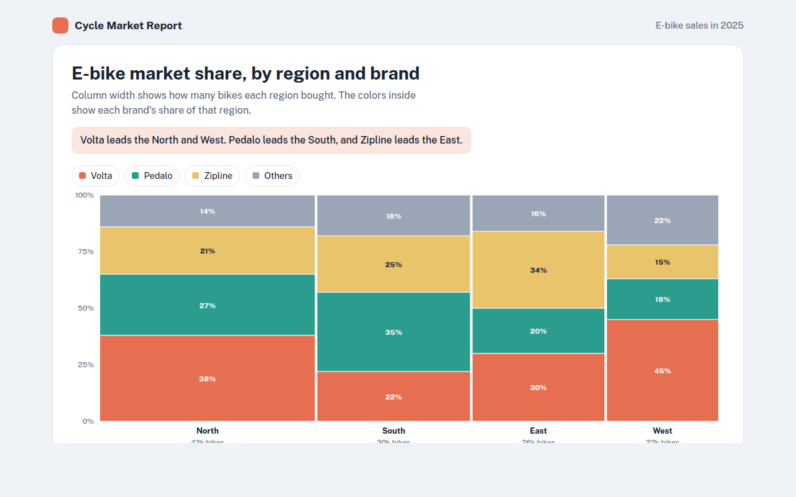
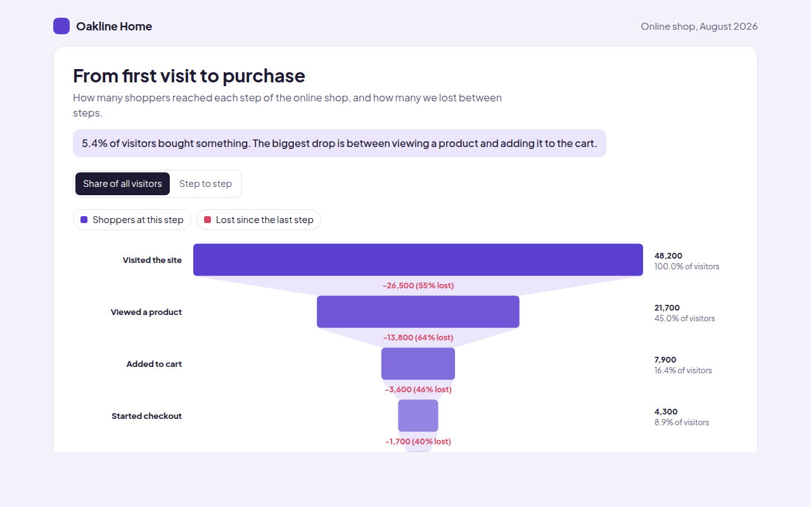
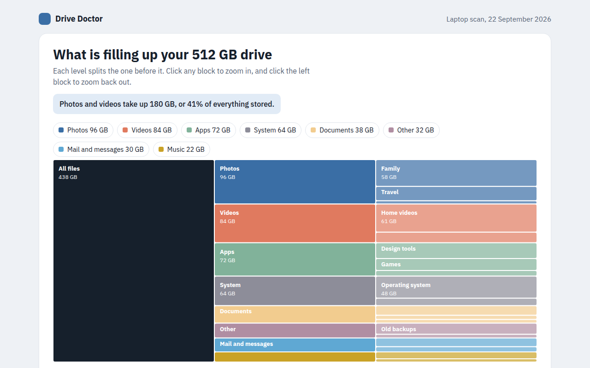
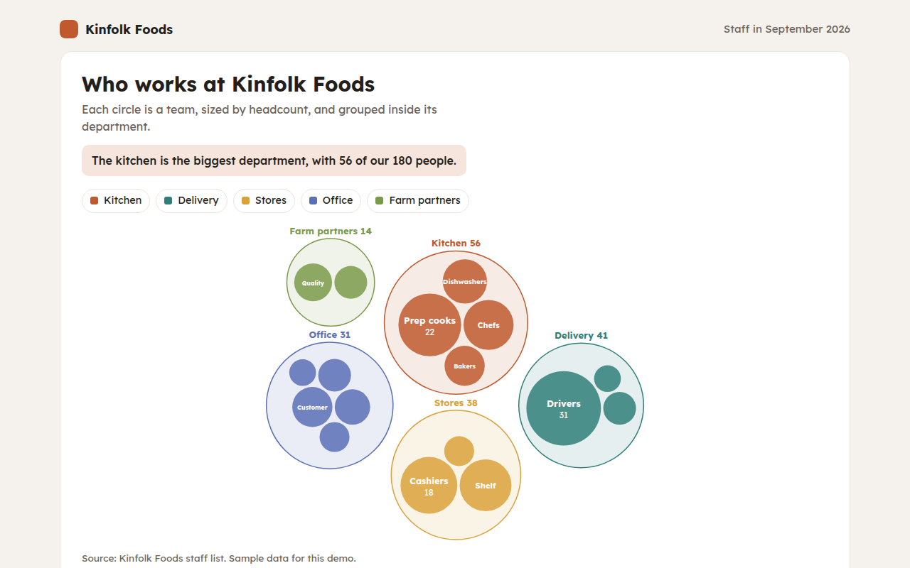

Home / Part to Whole / Pie Chart
Pie Chart in HTML, CSS and JavaScript
A pie chart is a circle divided into slices, where each slice shows one part of a whole. This free template draws one with plain SVG and vanilla JavaScript, no chart library. The example shows how customers paid at a cafe.

What is a pie chart?
A pie chart is a circle divided into slices, where each slice shows one part of a whole. The bigger the share, the bigger the slice, and all the slices together make 100%.
Pie charts are easy to understand because everyone has cut a pie or a pizza. They work best with two to five parts where one or two clearly stand out, like card and phone payments against cash.
At a glance
- Best for
- A few shares of one whole, 2 to 5 slices
- Data you need
- A name and a percent or count for each part
- Skip it when
- Many slices or slices of almost equal size. Use bars.
- Made with
- HTML, CSS and vanilla JavaScript. No library.
When to use a pie chart
- How customers paid
- Share of votes, answers or sales between a few options
- Budget split into a few big parts
- Simple reports and slides for a general audience
When to pick another chart
- Donut Chart: you want to show the total in the middle
- Waffle Chart: you want people to picture each percent
- Bar Chart: you have more than 5 parts or need exact comparisons
What you get in this template
- Slices drawn with SVG arc paths in plain JavaScript
- Labels outside the pie with thin lines, so small slices stay readable
- Slices pop out when you hover or tab to them
- Largest slice starts at 12 o clock and runs clockwise
- The pie sweeps open on load
- Keyboard support and a data table
How the code works
Here is a short version of the idea behind this pie chart. The full file adds the axis, labels, tooltips, sorting and resizing on top of it.
const slices = [['Card', 46, '#7a4b2a'], ['Phone', 31, '#c98b4f'], ['Cash', 17, '#8fa37e'], ['Gift card', 6, '#d9c3a5']];
const cx = 200, cy = 150, r = 120;
let start = 0;
slices.forEach(([name, pct, color]) => {
const end = start + pct / 100 * Math.PI * 2;
const x1 = cx + r * Math.sin(start), y1 = cy - r * Math.cos(start);
const x2 = cx + r * Math.sin(end), y2 = cy - r * Math.cos(end);
const large = end - start > Math.PI ? 1 : 0;
make('path', { d: 'M' + cx + ',' + cy + 'L' + x1 + ',' + y1 + 'A' + r + ',' + r + ' 0 ' + large + ' 1 ' + x2 + ',' + y2 + 'Z', fill: color });
start = end;
});The example uses four tiny helpers that create SVG shapes. Put them above the code and it runs as is.
const svg = document.querySelector('svg');
function make(tag, attrs) {
const n = document.createElementNS('http://www.w3.org/2000/svg', tag);
for (const k in attrs) n.setAttribute(k, attrs[k]);
svg.appendChild(n);
return n;
}
function drawRect(x, y, width, height, fill) { return make('rect', { x, y, width, height, fill }); }
function drawCircle(cx, cy, r, fill) { return make('circle', { cx, cy, r, fill }); }
function drawLine(x1, y1, x2, y2, stroke, width, dash) {
return make('line', { x1, y1, x2, y2, stroke, 'stroke-width': width || 1, 'stroke-dasharray': dash || 'none' });
}
function drawText(x, y, str, anchor) {
const t = make('text', { x, y, 'text-anchor': anchor || 'start' });
t.textContent = str;
return t;
}How to add it to your website
- Download the file. Click Download HTML file above. You get one file called pie-chart.html with everything inside.
- Change the data. Open the file in any code editor and find the DATA list near the bottom. Replace the names and numbers with your own.
- Change the colors and text. Colors are at the top of the style tag. The title, subtitle and main point are plain HTML near the top of the body.
- Put it online. Upload the file to any host, such as GitHub Pages, Netlify or your own server, or paste it into your site. There is no build step.
Questions people ask
How do I make a pie chart in HTML without a library?
Draw each slice as an SVG path: a line from the center to the edge, an arc along the edge, and back to the center. Work out the angles from each share. This template does it in plain JavaScript.
How many slices should a pie chart have?
Two to five. With more slices, the small ones become thin and hard to compare. Group small parts into Other, or use a bar chart.
Should pie chart slices be sorted?
Yes. Start the biggest slice at 12 o clock and go clockwise from largest to smallest. It makes the chart much easier to read.
Can I make a pie chart with CSS only?
Yes, with a conic-gradient background you can draw a simple pie in CSS. SVG is better when you need hover, tooltips, labels and keyboard support, like in this template.
More part to whole

022. Donut Chart
Example: workouts logged by members of a fitness app
023. Semi Donut Chart
Example: a fundraising appeal and the money still needed
024. Treemap
Example: bookshop sales by section and genre
025. Sunburst Chart
Example: where a city sends its household waste
026. Waffle Chart
Example: how 100 new customers found a furniture shop
027. Marimekko Chart
Example: e-bike market share by region and brand
028. Funnel Chart
Example: shoppers moving from first visit to purchase in an online shop
029. Icicle Chart
Example: what is filling up a laptop drive